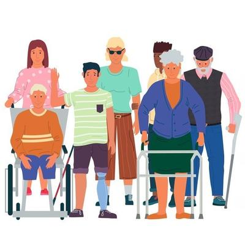

Hoy 3 de diciembre, el mundo conmemora el Día Internacional de las Personas con Discapacidad, una fecha promovida por la ONU desde 1992, con el fin de reivindicar la dignidad, los derechos y la plena inclusión social de quienes viven con alguna discapacidad. Es un día destinado a reflexionar sobre la igualdad, la empatía y el respeto.


¿Estás de acuerdo con estos principios y valores? —Nosotros también. Pero déjame decirte que tu «Dios» no. Basta abrir la Biblia, concretamente en Levítico 21:18-21, para encontrarte con un pasaje escalofriante por su crudeza y contenido profundamente excluyente. Allí «Dios» prohíbe a sus sacerdotes que se acerquen a su altar, si tienen lo que él considera un «defecto». Y como para que no queden dudas, proporciona una lista minuciosa: no quiere ver a ningún «ciego, o cojo, o mutilado, o sobrado», o a quien tuviere «quebradura de pie o rotura de mano, o jorobado, o enano, o que tenga nube en el ojo, o que tenga sarna, o empeine, o testículo magullado» (Levítico 21:18-20). Y en el siguiente capítulo, amplía su exclusión a cualquiera «que fuere leproso, o padeciere flujo» (Levítico 22:4).
Pero para comprender mejor «la palabra de Dios», detengámonos en algunos de sus términos arcaicos: como «mutilado» se refería probablemente el Creador del universo a quien carecía de algún miembro, como una mano o una pierna, tal vez por accidente o guerra, o incluso de nacimiento. «Sobrado» (del hebreo ‘sarua’) alude a quien tenía una extremidad deforme, más corta o más larga que la otra, una asimetría que en la mentalidad antigua era vista como señal de impureza o maldición. Mientras que la «nube en el ojo» describe lo que hoy conocemos como cataratas, una opacidad corneal que afecta la visión. Y quien «padecía de flujo», era alguien que sufría de algún tipo de secreción corporal, probablemente una hemorragia o una infección purulenta, lo cual lo convertía en «impuro».
Por otra parte, el «empeine» se refería a cierta erupción fúngica o enfermedad cutánea contagiosa, y un «testículo magullado» —expresión que delata la obsesión bíblica con la pureza sexual masculina— implicaba algún daño o atrofia en los órganos reproductivos del hombre, lo cual, en la cultura hebrea, equivalía a una condición que contradecía la «perfección» de la creación divina.
Por supuesto, la medicina moderna, apoyada en genética, epidemiología, inmunología y neurociencia, explica ahora la gran mayoría de aquellas enfermedades o discapacidades, sin recurrir a entidades sobrenaturales ni a moralismos. Hoy sabemos que algunas se producen simplemente por variación genética, aunque otras, como la sordera pueden también deberse a factores externos, como la meningitis, la exposición a fármacos ototóxicos o el ruido. Hoy sabemos que la «sarna» corresponde a lo que conocemos como escabiosis (ácaro Sarcoptes scabiei), y que el «empeine» se debe a tiñas (dermatofitosis por hongos), que ahora se curan con antiparasitarios y antifúngicos. Además, sabemos que la lepra o enfermedad de Hansen, es una infección provocada por una bacteria llamada Mycobacterium leprae, hoy curable con multiterapia antibiótica. Y también sabemos que algunas malformaciones congénitas pueden obedecer a otras causas ambientales (deficiencia de ácido fólico en defectos del tubo neural), teratógenos, o combinaciones multifactoriales.
Pero, aparte de lo anterior, la epidemiología moderna demuestra que hay también determinantes sociales, como la pobreza, educación, saneamiento, nutrición o acceso a la salud.
Sin embargo, lo curioso es que, según esa misma Biblia, la gente padece de enfermedades o discapacidades debido a que está pagando algún comportamiento «pecaminoso». La «palabra de Dios» se encarga de entregarnos un catálogo de calamidades o «enfermedades» que serían consecuencia de estos castigos de «Dios» (Deuteronomio 28:15-61).
Y hay que decir que esas discriminaciones que hace «Dios» a quienes se acercan a su altar (Levítico 21:18-21) no son en un lenguaje simbólico, sino real. En la sociedad israelita antigua, regida por sacerdotes, quien tuviera alguno de esos «defectos», no podía servir al Templo ni acercarse al altar de Yahvé, aunque perteneciera al «linaje sacerdotal». Era pues, un apartheid impuesto por mandato divino, donde la «perfección física» se confundía con «pureza moral», y donde una discapacidad era interpretaba como una imperfección que ofendía a «Dios».
Ahora, si tú, como creyente discapacitado, consideras que no cometiste ningún pecado contra «Dios» como para merecer esto, también la Biblia te da una explicación: algún antepasado tuyo cometió ese «pecado», y ahora tú tienes que pagar. ¿Qué te parece? Pues sí, porque también dice «la palabra de Dios» que puedes heredar la culpabilidad de un pecado cometido por tus antepasados, hasta la «tercera y cuarta generación» (Éxodo 20:5). Y los evangelios así lo confirman, cuando los discípulos de Jesús le preguntan: «¿quién pecó, él o sus padres, para que naciera ciego?» (Juan 9:1-2).
Pero como la Biblia siempre tiene respuestas a favor o en contra, encontramos que en Ezequiel 18:20 dice: «el hijo no llevará el pecado del padre, ni el padre llevará el pecado del hijo…» Bueno, ya sabes cómo es la Biblia. Lo cierto es que, en todo caso, «Dios» como autor de todo, también es autor de las discapacidades, tal como nos lo confirma Éxodo 4:11: «¿Quién hizo al mudo y al sordo…? ¿No soy yo Jehová?».
Por cierto, es interesante observar además, que los evangelios vinculan el «perdón de los pecados» con la curación. Y quien los haya leído se dará cuenta de que, al curar una enfermedad, Jesús también perdonaba los pecados del paciente (Mateo 9:5-6, Marcos 2:9-11, Lucas 5:23, Juan 5:14). De más está decir que no existe ninguna relación en esto.
Así que resulta irónico —y moralmente inquietante— que el cristianismo, heredero directo de esta tradición, haya construido sobre estas bases una doctrina que pretende predicar el «amor incondicional al prójimo». Más aún cuando el mismo Jesús, según los Evangelios de Marcos (Marcos 10:18) y Lucas (Lucas 18:19), afirmó que «Dios es bueno». ¿Bueno? ¿Un dios que excluye de su altar al ciego, al cojo o al enfermo? ¿Un dios que considera indigno de su presencia a quien sufre una dolencia congénita o un accidente? Si esa es la «bondad divina», habría que preguntarse qué clase de moral inspira semejante idea de perfección.
Por supuesto, desde una mirada racional, estos textos reflejan la mentalidad primitiva de una tribu del desierto que asoció la integridad física con el favor divino, y la enfermedad con la maldición. En aquella sociedad sin conocimiento médico ni noción de derechos humanos, el cuerpo era visto como signo del «alma»: lo deforme y enfermo era impuro, y era en sí un castigo. Y la religión institucionalizó esa superstición elevándola a ley sagrada.
En pleno siglo XXI, la ciencia, la ética y los derechos humanos han superado con creces esa visión arcaica del «Dios» bíblico. Hoy sabemos que las discapacidades no son defectos morales ni castigos divinos, sino variaciones humanas, muchas veces resultado de causas genéticas, accidentes o enfermedades, y que no disminuyen la dignidad ni el valor de una persona. Sin embargo, aún persiste en el inconsciente colectivo la idea de que la «normalidad» física es un ideal de perfección, idea que —nos guste o no— tiene raíces religiosas.
Así que este 3 de diciembre, mientras el mundo celebra la diversidad humana, convendría recordar que las religiones no siempre han estado del lado de los discriminados, y que su discurso de amor universal a menudo se contradice con sus textos fundacionales. En fin, tal vez el mejor homenaje a las personas con discapacidad no sea rezarles a los dioses que las excluyeron, sino luchar por una sociedad verdaderamente inclusiva, donde la dignidad humana no dependa de la forma del cuerpo ni del favor de ningún «Dios».
[Godless Freeman]
[Crédito de imagen: Energía para el Futuro]
Comentarios
Comments powered by Disqus